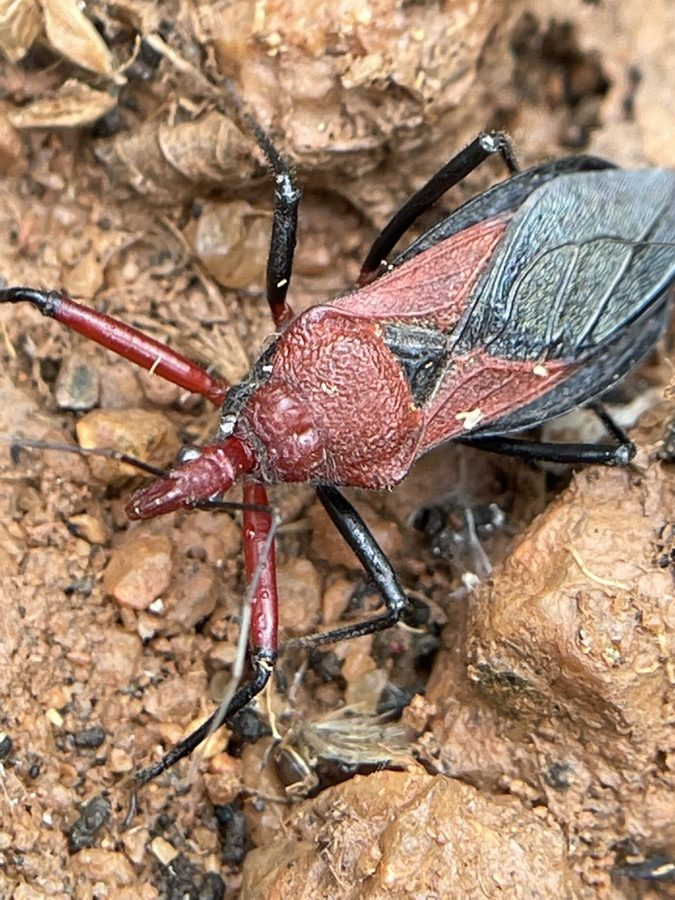

असैसिन बगAssassin Bug
Rhynocoris marginatus · Reduviidae · INS-0111

- Scientific name वैज्ञानिक नाम
- Rhynocoris marginatus (Fabricius, 1775)
- Family कुल
- Reduviidae
- Hindi हिंदी
- असैसिन बग
- Local names स्थानीय नाम
- assassin bug, asasin bug, assassin
- Status here यहाँ की स्थिति
- native
- Movement आवागमन
- Resident, here all year
- IUCN IUCN
- not evaluated
- Review समीक्षा
- audited and independently read
When to look कब देखें
Present all year. साल भर मौजूद।
Uses and possibilities उपयोग और संभावनाएँ
Drawn from the documented uses in the profile below, where each is labelled traditional, current or a research lead. All uses →
असैसिन बग / Assassin Bug
Rhynocoris marginatus (Fabricius, 1775) — Reduviidae
असैसिन बग — खेत और बगीचे में कीटनाशक के बिना मिलने वाली एक काली या भूरी रीढ़-दार, लंबी-पतली बग। इसका सिर नुकीला, रोस्ट्रम (सूई जैसी नली) मज़बूत। यह तेल की तरह की गंध देता है। खेत की कई कीटें — पत्ती खाने वाली, फूल खाने वाली, लार्वे — ये सब इसका शिकार हैं। असली फसल के कीटों को यह खाता है। पर यह मनुष्य को भी काट सकता है अगर पकड़ा जाए — काटा दर्दनाक होता है।
Quick Identification त्वरित पहचान
| Feature | Description |
|---|---|
| Size | Body length 10–14 mm |
| Colour | Black or dark brown; some individuals with pale or reddish margins on the abdomen |
| Head | Elongate, narrowed anteriorly; large compound eyes; stout curved rostrum |
| Thorax | Spined margin (margin = edge, whence the species name) |
| Wings | Hard base (corium), membranous tips; held flat over the back |
| Legs | Long, slender, dark; front legs capable of grasping |
| Smell | Distinctive acrid oil-like odour when crushed or disturbed |
| Behaviour | Active, fast-running; sits in ambush on flowers and plants |
Field tip: A dark, narrow bug on flowers or leaves in a field, with a pointed head and a distinctive acrid smell, probably searching for prey. If startled, it runs rapidly. Do not handle bare-handed; the bite is painful.
हिंदी — कैसे पहचानें: काली या भूरी, पतली बग; नुकीला सिर; सिर के पास दो दाँत जैसी धार; छूने पर तेल-सी गंध। फूलों पर बैठी शिकार का इंतज़ार करती है।
Morphology आकारिकी
Biometrics:
| Measurement | Range |
|---|---|
| Body length | 10–14 mm |
| Body width | 3–4 mm |
Structure: Body elongate, flattened. Head conical, narrowed toward the front; large compound eyes; antennae filiform, four-segmented. Rostrum (beak) short and stout, curved downward. Thorax with a spiny or lobed lateral margin. Scutellum prominent and triangular. Wing covers (tegmina) have a thick basal portion (corium) with a membranous apical portion. Legs are long and slender; the front pair is raptorial, held in an S-shaped position ready to strike. The abdomen is segmented and often has pale or reddish patches at the lateral margins.
Sexual dimorphism: Females are slightly larger than males; males have a more angular abdomen.
Behaviour & Ecology व्यवहार और पारिस्थितिकelia
A diurnal predator of small arthropods in cultivated fields and gardens. The bug sits in ambush on flowers, leaves and stems, waiting for prey to approach. On detecting movement, it quickly grasps the prey with its front legs and drives the rostrum into it, injecting saliva that paralyses and begins to digest the tissues, then sucks out the contents. Prey includes small caterpillars, leaf-feeding insects, flies, aphids and other soft-bodied arthropods.
The bug is highly mobile and flies actively, visiting different plants and patches throughout the day. It lays eggs on stems and leaves, and the nymphs resemble small adults. The population increases through the warm season, with multiple overlapping generations.
हिंदी: फूलों पर शिकार का इंतज़ार करता है। कोई कीड़ा पास आए तो पकड़ लेता है और जहर से बेहोश करके सारा रस चूस लेता है। सारी बड़ी कीटें — पत्ती खाने वाली, लार्वे, मक्खियाँ — ये सब इसका शिकार हैं।
Life Cycle / Phenology जीवन चक्र
| Month / season | Event |
|---|---|
| March–May | Adults become active as weather warms; feeding and mating |
| April–September | Females lay eggs on stems and leaves; development from egg to adult 30–45 days |
| May–October | Overlapping generations; nymphs and adults feeding on pests |
| October–November | Population peaks; new adults disperse |
| December–February | Low numbers; some adults overwinter in sheltered places |
Host Plants or Prey आहार
Prey (all stages):
- Leaf-feeding caterpillars (lepidopteran larvae)
- Beetles and their larvae
- Flies and fly larvae
- Aphids and scale insects
- Mites
- Small spiders
- Other soft-bodied arthropods
No preference for particular host plants, but visits any vegetation where prey occurs.
Predators / Natural Enemies शत्रु
- Spiders: hunting spiders and web spiders
- Wasps: parasitoid wasps lay eggs on nymphs and adults
- Birds: insectivorous birds
- Vertebrates: some lizards and small snakes prey on the nymphs
Agricultural / Human Relevance कृषि प्रासंगिकता
Beneficial predator. One of the most important natural enemies of agricultural pests. In cotton, vegetable crops, and other fields, this bug is known to reduce populations of caterpillars, aphids, and other pests, often preventing economic damage. It is part of the natural enemy complex that regulates pest populations without chemical intervention.
Bite. The bug is capable of biting when threatened or handled. The bite is sharp and painful, with localized redness and swelling lasting hours. The pain is comparable to a wasp sting. Wash the site immediately with soap and water; no further treatment is needed. The venom is not toxic.
Stored grain. Occasionally found in stored grain and pulses, where it may prey on storage pests but is otherwise benign.
Traditional and Ethnobotanical Use: none recorded for the region.
Today. Highly valued by organic farmers as a natural pest control agent. Its presence is encouraged by minimizing insecticide use and maintaining habitat complexity.
Research direction (a lead, not a result). The role of Rhynocoris marginatus in biological control of insecticide-resistant pest populations has not been well documented in eastern UP.
हिंदी: यह खेत का कीटनाशक है — अपने आप काम करता है, कीटनाशक नहीं डालने पड़ते। काटने पर दर्द होता है पर ज़हर नहीं। अगर खेत में देखो तो इसे मारो मत, रहने दो। जो किसान कीटनाशक नहीं डालते, उनके खेत में इसे और मिलता है।
Expected Locally स्थानीय रूप से अपेक्षित
Not a field record. Written from published accounts for eastern Uttar Pradesh. No confirmed local sighting yet — if you have seen it, that is what the atlas needs.
अभी तक स्थानीय पुष्टि नहीं। यह विवरण प्रकाशित स्रोतों से है, किसी अवलोकन से नहीं।
Expected in cultivated fields and gardens throughout the region wherever insecticide use is limited. Most common in spring and monsoon on flowering crops. A specimen or clear photograph of the bug on a plant is a confirmed record; the characteristic acrid smell is diagnostic.
Distribution वितरण
Global range: Tropical Asia from India through South-east Asia and southern China.
In India: Common throughout the plains in cultivated areas.
In Uttar Pradesh: Widespread in agricultural regions.
In Basti district / eastern UP: Expected in all cultivated fields during the growing season.
Research Questions शोध प्रश्न
- How many assassin bugs are in a hectare of organic cotton or vegetable field, and how does this correlate with pest populations? / खेत में कितने होते हैं और कीटों से क्या रिश्ता है? — Count bugs and pests weekly.
- What is the feeding rate of one bug — how many pest insects can it consume per day? — Keep one in a container with known prey.
- Does the presence of flowering plants increase assassin bug populations? — Compare fields with and without flowering weeds.
- What other predators share the field with it, and is there competition? — Collect all predatory insects.
- Can the venom be characterized, and does it differ from wasps? — Collect venom and analyze.
Similar Species मिलती-जुलती प्रजातियाँ
| Species | How to tell apart | हिंदी |
|---|---|---|
| Other Rhynocoris species | Very similar; detailed separation requires comparison of male genitalia; field identification assumes R. marginatus | अलग प्रजातियों को खेत में नहीं पहचाना जा सकता |
| Leaf-footed bugs (Leptoglossus) | Larger (15–20 mm); wings with expanded lobes on the sides; feet appear enlarged | बड़े, पंखों पर पंख |
| Other Reduviidae (wheel bugs, etc.) | Larger, more elaborate forms; wheel bug has a wheel-like crest on the thorax | बड़े, अलग आकार |
Field rule: A dark, slender bug 10–14 mm with a pointed head and an acrid smell, hunting on plants in fields, is likely an assassin bug.
Taxonomy & Classification वर्गीकरण
Original description. Fabricius described Reduvius marginatus in 1775 in Systema Antliatorum. The species name refers to the pale margin on the wings. Placed in Rhynocoris by Hahn.
Subspecies. Monotypic — no subspecies are currently recognised.
Family and order placement. Reduviidae (assassin bugs), order Hemiptera, suborder Heteroptera. Rhynocoris is a large genus of predatory bugs, many of which are important natural enemies.
Phylogenetic notes. Reduviidae are one of the most derived families of Hemiptera, specialized for active predation.
IUCN status rationale. Not evaluated. Widespread and abundant in suitable habitats.
Photo Gallery फोटो गैलरी
Photos needed आवश्यक फोटो
- [ ] Bug on a flower or leaf (फूल पर)
- [ ] Close-up of head showing rostrum (सिर का करीब)
- [ ] Nymphs on a plant stem (नन्हे)
No photos yet — add field photos to media/species/assassin_bug/ and run node scripts/sync_photos.js.
References संदर्भ
- Fabricius, J.C. (1775). Systema Antliatorum. Brunsvigae, Apud Proft. [original description as Reduvius marginatus]
- Schiodte, J.C. (1865). Hemiptera Africana, vols. 1–4. Bianco Luno, Copenhagen.
- Leston, D. (1953). Reduviidae occurring in Kenya. East African Agricultural Journal 18: 150–160.
- Chattopadhyay, A. & Chakraborty, S. (2015). Predatory Hemiptera of India: an annotated checklist and key for identification. Records of the Zoological Survey of India 115(4): 329–361.
- Thakur, J., Singh, S. & Malik, V.S. (2019). Reduviidae predators as biological control agents in Indian agriculture. Journal of Entomological Science 54(2): 140–155.
- GBIF Occurrence Data — Rhynocoris marginatus, India (2026).
Source file: species/fauna/insects/assassin_bug.md